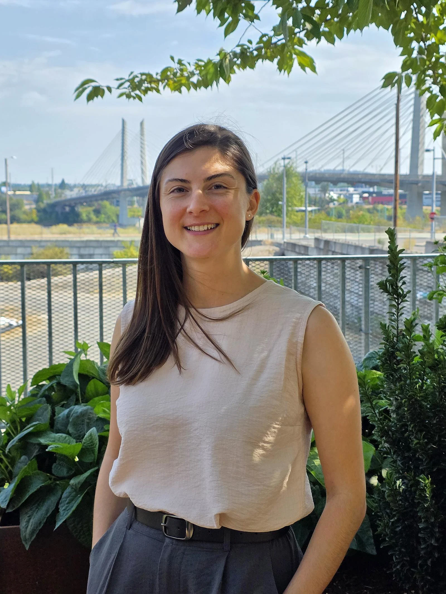

Cigdem Ak, Ph.D., is a mathematician at heart.
The senior post-doctoral researcher at OHSU’s Cancer Early Detection Advanced Research Center or CEDAR, was drawn to numbers, abstract ideas and logic from a young age. As she grew older, she felt a calling to use her knowledge to help people. This led her to Ecole Polytechnique, an engineering school in France, where she discovered a passion for using equations and machine learning to solve problems in biology and medicine.

Toward the end of her doctoral studies, she met Sadik Esener, Ph.D., the director of CEDAR.
“Dr. Esener told me that CEDAR is a very multi-disciplinary place where engineers, mathematicians, biologists and scientists work together,” Ak said. “That’s when I knew I wanted to come here and learn about cancer.”
When she first arrived at OHSU in 2020, the world was in the thick of the COVID pandemic. Ak began experimenting, using publicly available data sets to see if she could predict, through computational modeling and artificial intelligence, when and where an infectious disease outbreak would happen next.
Results were promising, and she turned her attention to the Cancer Genome Atlas (TCGA) — a database that contains the genetic information of nearly 10,000 patients with cancer.
She applied a similar interpretable machine learning approach as she had in her infectious disease study to predict patient stage and survival based on cancerous tumor genotype. Her question was simple: Will they survive or not, and why? Again, results were promising.
“I thought, if we can scale this to look at millions of cells, we can study tumor heterogeneity at a cellular level,” she said.
Ak began putting equations together, handwriting them on paper, then testing them. She ended up with about 10 lines of equations. The next step was turning equations into code. She initially used a coding language called “R,” then made it more efficient by converting it to Python code.
Most models cannot handle large single-cell datasets, but scMKL uses mathematical shortcuts called random Fourier features to scale to millions of cells without losing interpretability. It also builds ‘biological lenses’ — kernels based on genes, pathways, transcription factors and accessible DNA regions — so the AI sees data the way a biologist does.
Ak collaborated with CEDAR Director Esener, and two University of Oregon interns, to build this computational framework into artificial intelligence — an open-source tool called scMKL, or single cell multiple kernel learning. The software addresses a growing need in the study of cancer genomics: AI tools that can look at different kinds of cancer data at the same time and explain the findings in a way that matches real biology.
Researchers need this so they can not only understand what’s driving the cancer, but why the AI model made a prediction — which genes, transcription factors, pathways or cellular features mattered.
“We are in the age of AI with cancer research,” Ak said. “But clinicians rightly hesitate to trust black box AI. I call it black box because most of these tools make predictions, and often they are accurate predictions, but they don’t tell you why. The scMKL software that we developed does tell you why. That’s what makes it powerful.
“We have this paradox. We can measure so much about a cancerous tumor, but we can’t translate those measurements into clinical decisions. That’s the gap scMKL addresses. It’s not just prediction anymore, it’s insight that gives you a direction for possible intervention.”
The scMKL does three key things:
- It integrates multiple data types.
- It doesn’t just classify cells — whether they are cancer cells or not. It identifies which biological pathways and regulatory programs are driving that classification.
- It can learn from one dataset and apply those insights to different datasets.
In August 2025, Communications Biology, a Nature Portfolio journal, published Ak’s paper, Interpretable and integrative analysis of single-cell multiomics with scMKL. Two months later, in October, she presented the work at the Early Detection of Cancer Conference to scholars and researchers from Cancer Research UK and Stanford University.
The scMKL software is available on github for download, use and exploration. Hundreds of people from all over the world have downloaded it.
The main benefit of the tool, Ak said, is the transparency it brings to personalized cancer care AI. In the future, clinicians could input a patient’s cancer data — imaging, pathology, clinical records, DNA mutations, RNA expression and proteomics — into the scMKL tool to see how the patient’s specific cancer is going to evolve and discover the treatment that will provide the best response.
“In the short-term, it excites me that this is open source, and anyone in the world can use it,” Ak said. “I hope to spark discoveries beyond OHSU and our group. I hope it can accelerate more precise, more personalized, human-centered cancer care.
“I want to see people be inspired by this and build on it as I plan to build on it. There is more to come.”
Photos by Kari Hastings
Top photo: Cigdem Ak, a senior post-doctoral researcher with CEDAR at OHSU, gives a presentation on her scMKL software at Knight Research Day in September 2025.
Bottom photo: Cigdem Ak, senior post-doctoral researcher with CEDAR at OHSU.